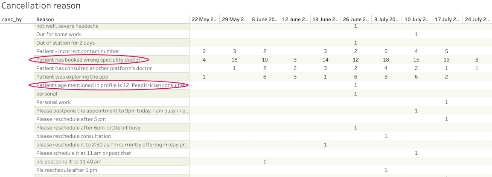

Healthcare at Your Fingertips: Elevating the Online Consultation Experience

-
Project Name
Online Consultation with Doctor: Instant & Scheduled
-
Contribution:
Taking initiative to improve our consultation platform
-
Timeline:
June - August 2023
-
Deliverable:
Mobile App and Website
-
Client Name:
Confedential
Breaking up is never easy. How to deal with customers who are leaving? Below is my approach to improving the user experience of online consultations.
Problem
Many users cancel their doctor appointments due to choosing the wrong specialist. They struggle to identify the right doctor for their problem/symptom.
Solution
In order to reduce the cancellation rate and improve retention, my proposals are:
- Search by symptoms/ Speciality: Tell us what's bothering you, and we'll help you find the right specialist. Browse by specialty/symptoms: Still prefer searching by area of expertise? Go for it!
- Listen to why the user is leaving, and then present them meaningful offers/helps to address the reason they have stated.
- Provide bigger ecosystem of support and ask for feedback.
Why providing a great offboarding experience is important
- A pleasant user experience leaves a good impression on users, they may reuse the service from our platform instead of moving to different platform in the future.
- Happy users might recommend our app to their dependents for their medical needs, leading to positive word-of-mouth growth.
User Research: Uncovering hidden hurdles in the user journey
I looked into ways to improve our consultations and found that some people cancel because they're not sure which doctor to choose for their needs. This can be because they don't have enough information or the details aren't clear. In some cases, they might even prefer to use a different platform for their consultation.
Cancellatioin Data
Map out the user journey of online consultation
Current Online Consultation
I noticed ways to make our online consultations even better, and these improvements could lead to fewer people canceling!

The pain points of existing consultation flow
- Right now, new users can only book appointments by choosing a doctor's specialty or searching for a specific doctor.
- They can't search by their symptoms or medical problem, which would make it easier to find the right doctor for them..
Competitive Analysis
In order to aid and inform important design decisions for the consultation flow, I conducted competitive analysis. I analyzed how some other competitors are providing the consultation services that have solved similar problems. For example, 1mg, Mfine, Practo, Apollo, MediBuddy, Netmeds.
Remember Jakob's law of the internet user experience: Users spend most of their time on websites other than yours. Thus, a big part of customers' mental models of your site will be influenced by information gleaned from other sites. People expect websites to act alike.
Jakob's Law
What I wanted to learn
- How i can improve the current cosnultation flow?
- What flows felt unpleasant? What made them feel that way?.
- What types of help/alternatives are avaliable?
Designing the Online Consulation journey
There are multiple ways to solve a problem, and there’s no perfect solution. As a designer, you are not only solving for end customers but essentially finding a solution that best suits the business goals, tech capabilities, product placement, etc. along with your product design goals.
I began by mapping out the steps involved in online consultations to understand what changes I want to make and how they will impact the current process. Here's a quick overview of the updated workflow.
There are 5 major parts to this flow — Customer Support, Search, Instant Consultation, Choose by Symptoms and Choose by Specilaity. Let’s visit each of these in detail.
Customer Support
- Our Application focus mainly on target user of 18-60 (Corporate Employees).
- We want everyone to get the care they need, even if they're not tech experts! Our app simplifies booking consultations, making it easy for anyone to consult a doctor.
- We offer the option to book a consultation through our Ops team by calling them directly using customer support. They will assist you by booking based on the information you provide and share the payment link for you to proceed with the consultation.
Search Functionality & Choose by Symptoms
- I'm adding a "Symptoms" category to this feature! To make it work smoothly, I need to prepare some things beforehand (the "ground work") across the system which i will explain in next section.
- Users have the flexibility to search directly by doctor, specialty, or symptoms. Likewise, in the Symptoms section, users can directly select their symptoms to view the corresponding specialty of doctors
Introducing Symptoms
- Introducing symptoms posed a challenge, but it provided valuable insights into the healthcare industry. I would like to express my gratitude to our in-house Dr. Vinodhkumar for assisting with symptom data and mapping it to the respective specialties.
- Introducing symptoms not only enhanced the specialization but also involved grouping specialties based on health conditions.
- Here's a sneak peek at how we transformed the data into UI design. We created icons for each symptom and a dedicated screen where users can see the full list of symptoms directly from the consultation screen.
Speciality Improved
- Similarly we improved the speciality visually as well as information architecture. How we can present the information better for user. it will help them consume the information much better
- We enhanced the visual appeal by replacing the large icon representation with image thumbnails and an improved layout.
- We got the data for the top speciality which used for the past month, which helps to do the sorting of speciality
User Friendly tone with Improved Design
We gathered all feedback and studied lots of data to make our consultation process even better. We explored many different ideas, making sure the final design that aligns with our business objectives, is technically feasible, and adheres to the platform's design guidelines. Considering all these factors, we decided to proceed with this design.
Metrics
Following the implementation of various enhancements in our consultation process, we are proactively engaged in monitoring data trends over the next two months. Our primary focus is to assess and analyze the impact of these changes on both our users and the overall business. This monitoring period allows us to gather valuable insights into user interactions, satisfaction levels, and the performance of the implemented improvements. By closely examining the data, we aim to make informed decisions, address any emerging challenges, and ensure that the modifications contribute positively to the overall user experience and business outcomes. We found some valuvale insights and data:
- We observed a noteworthy decrease in online consultation cancellations from the patient side, ranging from 5% to 9%
- The number of consultations booked by agents increased by 11-14% with the introduction of the customer support option on the consultation homepage
- From a business perspective, this indirectly contributes to an increase in the purchase of prescribed medicines and diagnostic tests recommended through the consultation prescription, as illustrated below.
What Next?
If I would continue work on this project, these could be my next steps:
- While there has been an increase in consultation bookings facilitated by agents, there is a slight difference in the bookings made directly by patients. I am actively exploring opportunities to identify and address potential areas for improvement in patient-driven bookings.
- Discover enhanced methods for users to tailor their online consultations, taking into account their medical history and specific needs.